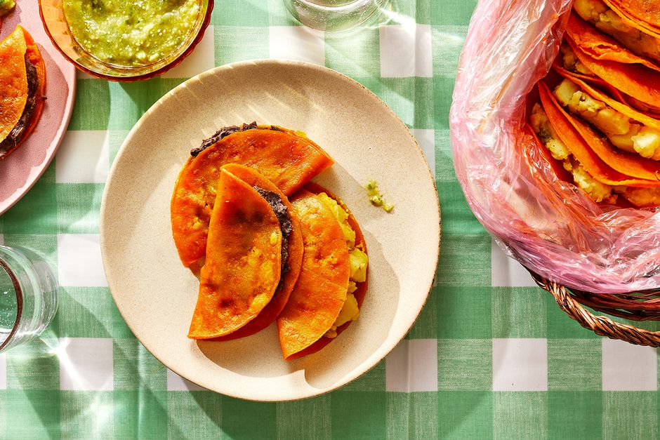

Martha's Tacos de Canasta

Description
Tacos de canasta translates in English as "basket tacos,"
which perfectly describes how they're transported and
served. To make them, you'll fill your tacos individually,
as usual. Then you'll pack them in a plastic bag coated
with a chile-infused oil, where they'll steam on their
own and keep warm until you're ready to eat them.
They're also sometimes called tacos sudados (sweaty!).
Ingredients
For the First Filling
- 1/2 medium white onion
- 1 jalapeño pepper
- 1 tablespoon vegetable oil, or pork lard
- 2 pounds potatoes, peeled and diced
- 1 teaspoon kosher salt
For the Second Filling
- 1 tablespoon vegetable oil, or pork lard
- 1/2 medium white onion, coarsely chopped
- 1 clove garlic, minced
- 4 cups canned black beans, from about 2 (15-ounce) cans
- 1 teaspoon kosher salt
For the salsa
- 3/4 pound tomatillos
- 1 clove garlic, crushed
- 1 medium white onion, coarsely chopped
- 1/2 cup coarsely chopped fresh cilantro
- Kosher salt, to taste
- 1 large ripe avocado, diced
For the Tacos
- Vegetable oil, or pork lard, for frying
- 3 tablespoons ground achiote
- 20 corn tortillas
Steps
Make the First Filling
- Gather the ingredients
- Slice the onion crosswise.
- Slice off the stems and tops off the jalapeños,
slice them in half lengthwise, and remove the seeds
and veins. Then slice them crosswise
- Heat the oil in a large skillet over medium heat.
When the oil shimmers, add the onion and jalapeño
and cook until soft
- Add the potatoes and cook, pressing with a spatula,
until they are completely mashed. Add salt and stir
to incorporate
- Transfer to a bowl and set aside. Wipe out the skillet
Making the Second Filling
- Gather the ingredients
- Heat the vegetable oil (in the same skillet used
for the first filling) over medium-low heat. When the oil
shimmers, add the onion and garlic and cook until they
begin to soften
- Add the beans with the liquid in the can and cook,
pressing with a spatula until they are mostly mashed.
Add salt and stir to incorporate. Set aside
Make the Salsa
- Gather the ingredients
- Bring a large pot filled with water to a boil. Add the
tomatillos and cook until the skins begin to peel, about
30 seconds. Remove with a slotted spoon and let cool
- Remove and discard the skins
- To a blender, add the prepared tomatillos, garlic,
onion, and cilantro, and salt to taste. Blend until
mostly pureed, but still slightly chunky
- Fold in the avocado. Adjust the seasoning with salt.
Transfer to a bowl
Build the tacos
- Line the basket with a large bath towel. Place the
plastic bag on top of the towel. Line the inside of
the plastic bag with parchment or waxed paper
- Heat about 1 1/4 cups vegetable oil in a large skillet
over medium-high heat. Add the ground achiote and stir
to dissolve in the oil. When the oil begins to shimmer,
dip each tortilla into the hot, seasoned oil and fry
lightly, about 3 seconds per side (they should lightly
fried, but still soft and foldable, not crispy). Transfer
to a paper-towel-lined rimmed baking sheet. Reserve the
oil in the skillet
- Fill 10 tacos with the potato filling. Fold in half.
Fill the remaining 10 tacos with the bean filling.
Fold in half. Transfer to the plastic bag with the oil
as noted above. Tightly close the plastic bag once all
the tacos are assembled. Fold the towel over the top of
the plastic bag to keep the tacos warm. If necessary,
add more towels on top to keep the tacos insulated
- Serve the tacos with the salsa. If you're not eating them
all at once, keep the rest in the bag, covered with the
towel